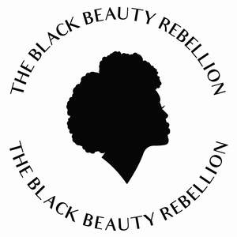

Trade Mark Journal No.2025/044 31 October 2025
UK00004248902 13 August 2025 (3,9,21,35,44)

- Class 3
- Cosmetics; Skincare cosmetics; Moisturisers [cosmetics]; Cosmetics and cosmetic preparations; Hair cosmetics; Skin fresheners [cosmetics]; Cosmetics for suntanning; Cosmetics for eye-lashes; Anti-aging moisturizers used as cosmetics; Organic cosmetics; Lip cosmetics; Non-medicated cosmetics; Nail cosmetics; Skin moisturizers used as cosmetics; Natural cosmetics; Mousses [cosmetics]; Cosmetics preparations; Make-up palettes containing cosmetics; Tanning gels [cosmetics]; Tanning oils [cosmetics]; Cosmetics in the form of lotions; Facial creams [cosmetics]; Beauty care cosmetics; Self-tanning preparations [cosmetics]; Colour cosmetics; Suncare lotions [for cosmetic use]; Tanning preparations [cosmetics]; Eyebrow cosmetics; Decorative cosmetics; Multifunctional cosmetics; Milks [cosmetics]; Eye cosmetics; Body creams [cosmetics]; After-sun oils [cosmetics]; Skin masks [cosmetics]; Cosmetics for eye-brows; Tanning milks [cosmetics]; Suntan oils [cosmetics]; Functional cosmetics; Facial gels [cosmetics]; Skin care cosmetics; Cosmetics for children; Fluid creams [cosmetics]; Suntan lotion [cosmetics]; Non-medicated cosmetics and toiletry preparations; Humectant preparations [cosmetics]; Emollient preparations [cosmetics]; Cosmetics in the form of creams; Powder compacts [cosmetics]; Sun-tanning preparations [cosmetics]; Cosmetic hair lotions; Colour cosmetics for the skin; Suntanning oil [cosmetics]; After-sun milks [cosmetics]; Cosmetics for use on the skin; After-sun milk [cosmetics]; Cosmetic moisturisers; Sunscreens [for cosmetic use]; Bath powder [cosmetics]; Night creams [cosmetics]; Skin recovery creams [cosmetics]; Cosmetic creams and lotions; Body gels [cosmetics]; Cosmetic products in the form of aerosols for skincare; Sun blocking lipsticks [cosmetics]; Cosmetics for the use on the hair; Body and facial creams [cosmetics]; Sunscreen [for cosmetic use]; Lip stains [cosmetics]; Sunscreen creams [for cosmetic use]; Creams (Cosmetic -); Cosmetic creams; Body care cosmetics; Cosmetic soaps; Cosmetics in the form of powders; Cosmetics containing keratin; Hair care lotions [for cosmetic use]; Cosmetic skin fresheners; Cosmetics in the form of oils; Dyes (Cosmetic -); Cosmetic dyes; After-sun lotions [for cosmetic use]; Beauty lotions; Cosmetics containing panthenol; Cosmetic facial lotions; Facial lotions [cosmetic]; Nail paint [cosmetics]; Cosmetic suntan lotions; Nail hardeners [cosmetics]; Skin care lotions [cosmetic]; Perfume oils for the manufacture of cosmetic preparations; Colour cosmetics for children; Tissues impregnated with cosmetics; Nail tips [cosmetics]; Anti-aging creams [for cosmetic use]; Sun protecting creams [cosmetics]; Nail primer [cosmetics]; Anti-ageing creams [for cosmetic use]; Smoothing emulsions [cosmetics]; Cosmetic products for the shower; Skin cleansers [cosmetic]; Perfumed powders [for cosmetic use]; Liners [cosmetics] for the eyes; Moisturising skin lotions [cosmetic]; Cosmetic creams for the skin; Skin creams [cosmetic]; Body and facial gels [cosmetics]; Skin creams [for cosmetic use]; Anti-aging moisturizers; Anti-aging serum for cosmetic use; Moisturising skin creams [cosmetic]; Cosmetic products in the form of aerosols for skin care; Skin care creams [cosmetic]; Skincare preparations; Anti-ageing serums for cosmetic purposes; Anti-ageing moisturiser; Facial moisturisers [cosmetic]; Acne cleansers, cosmetic; Cleansing creams [cosmetic]; Non-medicated skincare preparations; Facial cleansers [cosmetic]; Anti-aging creams; Beauty serums with anti-ageing properties; Cosmetic creams for skin care; Anti-aging skincare preparations; Soaps for body care; Deodorants for body care; Preparations for the care of the body; Lotions for face and body care; Beauty creams for body care; Cosmetic preparations for body care; Non-medicated body care preparations; Body cleaning and beauty care preparations; Essences for skin care; Body lotions; Hair care lotions; Body lotion; Skin care preparations; Skin care oils [cosmetic]; Body scrubs; Body wash; Hand masks for skin care; Body scrub; Skin care oils [non-medicated]; Exfoliants for the care of the skin; Cleansing milks for skin care; Skin care mousse; Body moisturisers; Foot masks for skin care; Body polish; Skin care products for animals; Milky lotions for skin care; Face and body lotions; Body shampoos; Hair care serum; Cosmetic body scrubs; Body scrubs [cosmetic]; Hair care agents; Body oils; Hair and body wash; Skin care (Cosmetic preparations for -); Cosmetic preparations for skin care; Hair care serums; Facial care preparations; Skin, eye and nail care preparations; Body and facial oils; Body oils [for cosmetic use]; Moisture body lotion; Perfumed oils for skin care; Body creams; Hair care masks; Hair care creams; Sun care lotions; Hair care preparations; Cosmetic hair care preparations; Oil baths for hair care; Beard care preparations; Hair care preparations, not for medical purposes; Hair shampoos; Skin care creams, other than for medical use; Hair shampoo; Hair styling lotions; Hair moisturizers; Hair strengthening treatment lotions; Shampoos for human hair; Hair lotions; Baby hair conditioner; Hair serums; Hair lotion; Hair emollients; Hair conditioner; Hair protection lotions; Wax treatments for the hair; Conditioners for treating the hair; Hair moisturisers; Cosmetic preparations for the hair and scalp; Horse oil cream for skin care; Hair treatment preparations; Hair balm; Hair relaxers; Hair styling gel; Hair nourishers; Hair grooming preparations; Beauty preparations for the hair; Hair conditioners for babies; Nail care preparations; Beauty care preparations; Non-medicated skin care preparations; Hair dye; Hair conditioners; Hair permanent treatments; Non-medicated hair shampoos; Hair bleach; Hair creams; Hair rinses [for cosmetic use]; Hydrating creams for cosmetic use; Serums for cosmetic purposes; Skin hydrators for cosmetic purposes; Exfoliating scrubs for cosmetic purposes; Beauty serums; Styling lotions; Recovery creams for cosmetic use.
- Class 9
- Facial analysis software.
- Class 21
- Cosmetics brushes; Applicators for cosmetics; Cosmetics applicators; Containers for cosmetics; Dispensers for cosmetics; Racks for cosmetics; Holders for cosmetics; Hair brushes; Shampoo brushes; Hair color application brushes; Brushes; Make-up brushes; Hair combs; Combs for back-combing hair; Electric rotating hair brushes; Mane brushes [horse combs]; Eyeliner brushes; Mascara brushes; Eyelash brushes; Electric hair combs; Eyebrow brushes; Hot air hair brushes; Nail brushes; Combs for the hair (Large-toothed -); Electrically heated hair brushes; Lip brushes; Tooth brushes; Cosmetic brushes; Exfoliating brushes; Stands for shaving brushes; Skin cleansing brushes; Bath brushes; Holders for shaving brushes; Bathtub brushes; Hand tools for the application of cosmetics; Microdermabrasion sponges for cosmetic use; Cosmetic, hygiene and beauty care utensils.
- Class 35
- Marketing research in the fields of cosmetics, perfumery and beauty products; Retail services connected with the sale of subscription boxes containing cosmetics; Mail order retail services for cosmetics; Online retail services relating to cosmetics; Administration of a discount program for enabling participants to obtain discounts on goods and services through use of a discount membership card; Loyalty, incentive and bonus program services; Analysis of market research data; Business analysis and information services, and market research; Market research and market analysis; Advertising analysis; Business analysis; Market analysis reports; Analysis of markets; Business management of wholesale and retail outlets; Online retail store services relating to cosmetic and beauty products; Advertising the goods and services of online vendors via a searchable online guide; Business management of retail outlets; Online ordering services; Retail services in relation to fashion accessories; Commercial information and advice services for consumers in the field of make-up products.
- Class 44
- Cosmetic make-up services; Cosmetic analysis; Medical analysis services; Beauty consultation; Beauty consultation services; Consultation services relating to beauty care; Beauty counselling; Beauty treatment; Beauty consultancy; Beauty salon services; Salon services (Beauty -); Beauty treatment services; On-line make-up consultation services; Make-up consultation and application services; Facial beauty treatment services; Beauty salons; Salons (Beauty -); Consultation services in the field of make-up; Beauty spa services; Beauty care; Services of a hair and beauty salon; Beauty therapy services; Advisory services relating to beauty treatment; Beauty care services; Beauty consultancy services; Beauty advisory services; Advisory services relating to beauty care; Beauty information services; Medical consultation; Consultation services relating to skin care; Beauty treatment services especially for eyelashes; Consultancy in the field of body and beauty care; Beauty care services provided by a health spa; Consultation services relating to body hair removal; Consultancy services relating to beauty; Advisory services relating to beauty; Consultation services relating to massage ; Beauty therapy treatments; Make-up consultation services provided on-line or in-person; Hygienic and beauty care services; Providing information relating to beauty salon services; Nutritional advisory and consultation services; Hygienic and beauty care; Information relating to beauty care; Human hygiene and beauty care; Provision of hygienic and beauty care services; Consultancy provided via the Internet in the field of body and beauty care; Beauty care of feet; Cosmetic treatment services for the body, face and hair; Cosmetic facial and body treatment services; Cosmetic body care services provided by health spas; Information relating to beauty; Skin care salon services; Cosmetic body care services; Cosmetic treatment for the hair.
The Black Beauty Rebellion Ltd